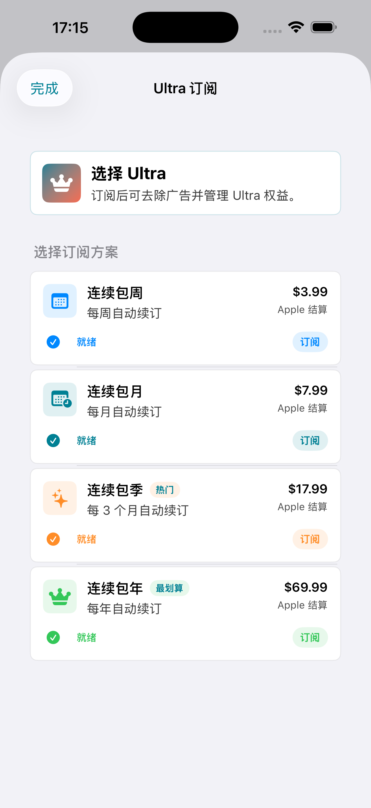

1
开始前准备
- 准备来自你自己服务提供方的 sing-box JSON、订阅 URL、代理 URI、二维码、剪贴板文本或本地文件。
- 导入前先确认服务器或订阅端点在当前网络下可访问。
- SpellVPN 是客户端，不销售代理节点，也不运营开发者托管的 VPN 流量网络。

2
导入配置
- 打开 SpellVPN，根据来源选择扫码、照片二维码、剪贴板、文件、订阅 URL、代理链接或 URL Scheme。
- 保存前检查识别出的配置名称、协议、服务器和规则信息。
- 如果导入失败，请检查订阅 URL 是否过期、JSON 是否格式错误、协议是否不支持，或服务器与端口是否缺失。

3
连接与断开
- 选择已保存的配置，点击连接控制。
- 首次安装 Packet Tunnel 配置时，在 iOS VPN 权限弹窗中确认允许。
- 需要断开时使用同一个控制；如果隧道无法启动，可查看本地状态和日志。

4
备份、日志和版本
- 仅在你需要保留配置副本时使用本地导出或 iCloud Drive 备份。
- 日志保存在设备本地，可用于排查连接或配置校验问题。
- SpellVPN Pro 为付费下载，无广告、无 App 内购买。SpellVPN Ultra 免费使用并展示广告；可选 App Store 订阅可去广告并解锁 Ultra 权益。

如需帮助，请联系 balamanigill@gmail.com.
Pro 为付费下载，无广告、无 App 内购买。Ultra 免费版接入 Yandex/AdMob 广告，并提供可选自动续期订阅。